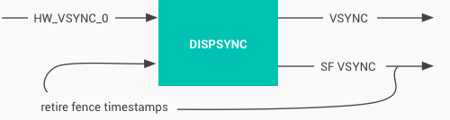

The VSYNC signal synchronizes the display pipeline. The display pipeline consists of app rendering, SurfaceFlinger composition, and the Hardware Composer (HWC) presenting images on the display. VYSNC synchronizes the time apps wake up to start rendering, the time SurfaceFlinger wakes up to composite the screen, and the display refresh cycle. This synchronization eliminates stutter and improves the visual performance of graphics.
The HWC generates VSYNC events and sends the events to SurfaceFlinger through the callback:
typedef void (*HWC2_PFN_VSYNC)(hwc2_callback_data_t callbackData,
hwc2_display_t display, int64_t timestamp);
SurfaceFlinger controls whether or not the HWC generates VSYNC events by
calling to setVsyncEnabled. SurfaceFlinger enables
setVsyncEnabled to generate VSYNC events so it can synchronize with
the refresh cycle of the display. When SurfaceFlinger is synchronized to the
display refresh cycle, SurfaceFlinger disables setVsyncEnabled to
stop the HWC from generating VSYNC events. If SurfaceFlinger detects a
difference between the actual VSYNC and the VSYNC it previously established
SurfaceFlinger re-enables VSYNC event generation.
The sync app and SurfaceFlinger render loops to the hardware VSYNC. On a VSYNC event, the display begins showing frame N while SurfaceFlinger begins compositing windows for frame N+1. The app handles pending input and generates frame N+2.
Synchronizing with VSYNC delivers consistent latency. It reduces errors in apps and SurfaceFlinger and minimizes displays drifting in and out of phase with each other. This, assumes app and SurfaceFlinger per-frame times don’t vary widely. The latency is at least two frames.
To remedy this, you can employ VSYNC offsets to reduce the input-to-display latency by making app and composition signal relative to hardware VSYNC. This is possible because app plus composition usually takes less than 33 ms.
The result of VSYNC offset is three signals with same period and offset phase:
HW_VSYNC_0 — Display begins showing next frame.VSYNC — App reads input and generates next frame.SF_VSYNC — SurfaceFlinger begins compositing for next frame.With VSYNC offset, SurfaceFlinger receives the buffer and composites the frame while the app simultaneously processes the input and renders the frame.
DispSync maintains a model of the periodic hardware-based VSYNC events of a display and uses that model to execute callbacks at specific phase offsets from the hardware VSYNC events.
DispSync is a software phase-lock loop (PLL) that generates the VSYNC and SF_VSYNC signals used by Choreographer and SurfaceFlinger, even if not offset from hardware VSYNC.
Figure 1. DispSync flow
DispSync has the following qualities:
The signal timestamp of retire fences must match HW VSYNC, even on devices that don’t use the offset phase. Otherwise, errors appear to be more severe than they are. Smart panels often have a delta where the retire fence is the end of direct memory access (DMA) to display memory, but the actual display switch and HW VSYNC is some time later.
PRESENT_TIME_OFFSET_FROM_VSYNC_NS is set in the device’s
BoardConfig.mk makefile. It's based on the display controller and panel
characteristics. The time from the retire fence timestamp to the HW VSYNC
signal is measured in nanoseconds.
VSYNC_EVENT_PHASE_OFFSET_NS and
SF_VSYNC_EVENT_PHASE_OFFSET_NS are set conservatively based on
high-load use cases, such as partial GPU composition during window transition
or Chrome scrolling through a web page containing animations. These offsets
allow for long app render time and long GPU composition time.
More than a millisecond or two of latency is noticeable. To minimize latency without significantly increasing error counts, integrate thorogh automated error testing.